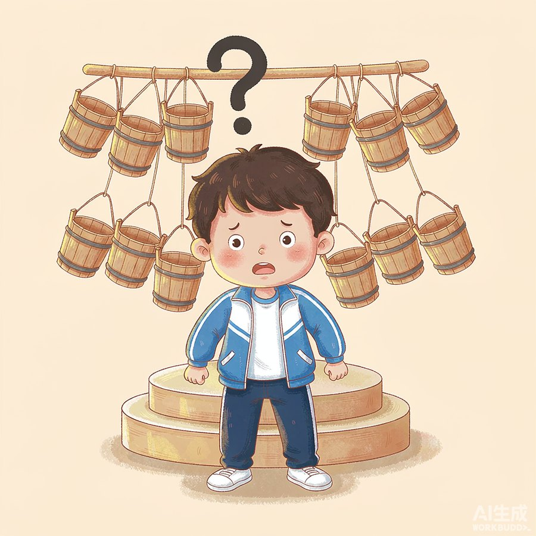
插圖已完成
解釋七、八：指多而雜。形容心情慌亂不安，也指情緒複雜，無所適從。
字詞拆解七、八：指多而雜｜上、下：指心緒起伏不定
例句在宣佈比賽結果前的一刻，我們的心情七上八下。
近義心神不定｜忐忑不安：形容心神非常不安。
反義若無其事：形容神態鎮靜、自然。
插圖畫面頒獎台前，一個小男孩胸口像吊着十五個小水桶，七個往上、八個往下不停晃動，頭上冒着問號。
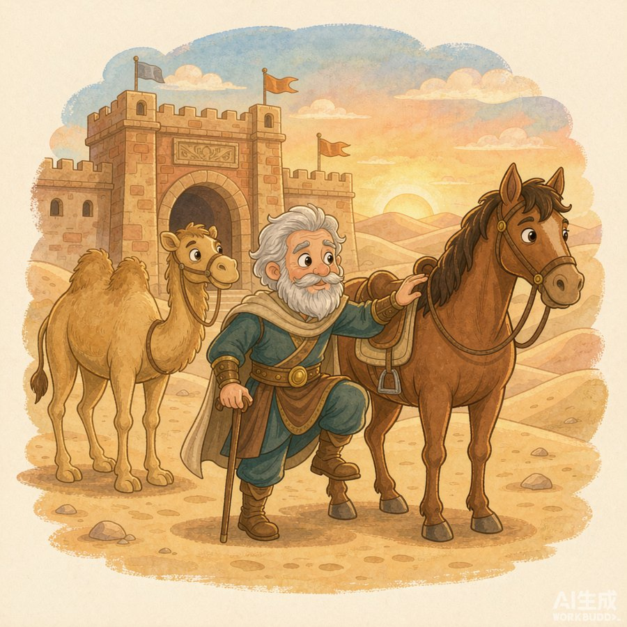
插圖已完成
解釋心裏想做某事，可是力量不足。
字詞拆解從：順從、聽從｜力：力量、能力
例句爺爺年老體弱，走較遠的路往往覺得力不從心。
近義無能為力：沒有力量或能力去做。
反義得心應手：比喻技藝熟練，或做事順利。
典故東漢的班超在西域守了二十七年，頭髮都白了，走路要撐着手杖，超想回家。妹妹班昭看不下去，寫信給皇帝：「我哥哥老啦，萬一邊疆出事，他就算心裏想拚，身體也跟不上啊！」皇帝一看十分感動，立刻讓他返回中土。就像你想幫同學搬一大箱書，心裏超願意，手臂卻一直抖——這就是「力不從心」。
插圖畫面白髮斑斑的老將軍扶着手杖站在沙漠城門外，想跨上馬背卻跨不上去，旁邊一隻駱駝靜靜看着。
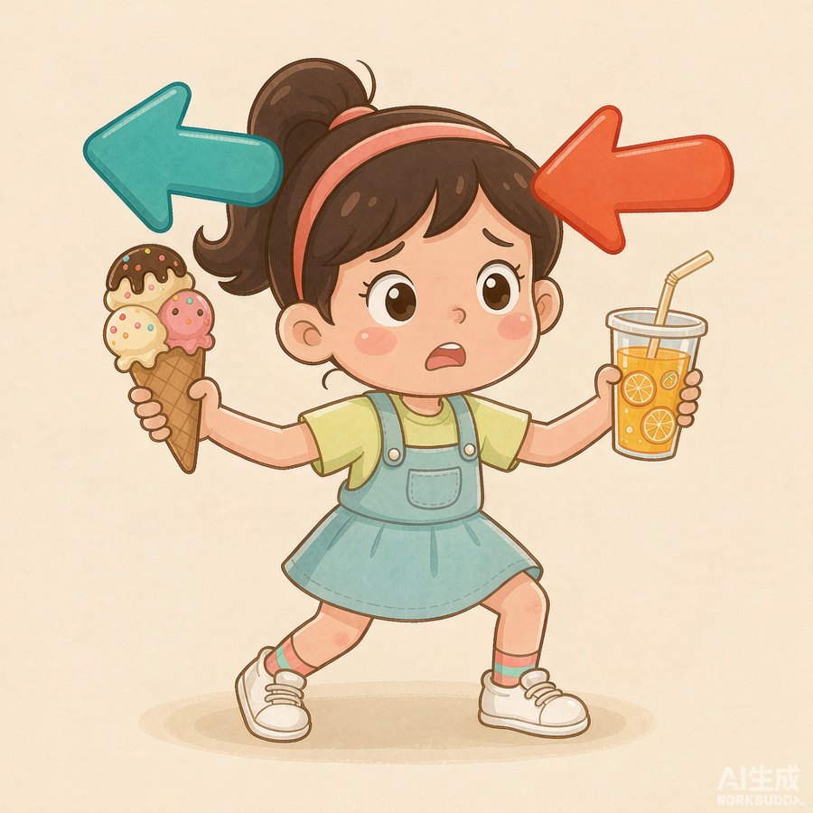
插圖已完成
解釋形容猶豫不決、意志不堅定。
字詞拆解三、二：指多而雜，不是實數｜意：念頭、主意
例句妹妹一時想吃冰淇淋，一時又想喝果汁，真是三心二意。
近義舉棋不定：比喻做事無法拿定主意。
反義一心一意：指十分專一，沒有其他念頭。
插圖畫面小女孩左手舉着冰淇淋、右手拿着果汁，身體左右搖擺，頭上兩個方向箭頭各拉一邊。
插圖已完成
解釋指壞人受到懲罰或打擊，使大家非常痛快。
字詞拆解快：痛快、暢快｜人心：眾人的心
例句這個歹徒終於受到法律制裁，實在大快人心。
近義拍手稱快：拍着手喊痛快，形容十分高興和痛快。
反義天怒人怨：形容為害作惡十分嚴重，引起普遍的怨憤。
插圖畫面壞蛋被警察戴上手銬帶走，圍觀的同學一起拍手歡呼，彩色紙屑滿天飛。
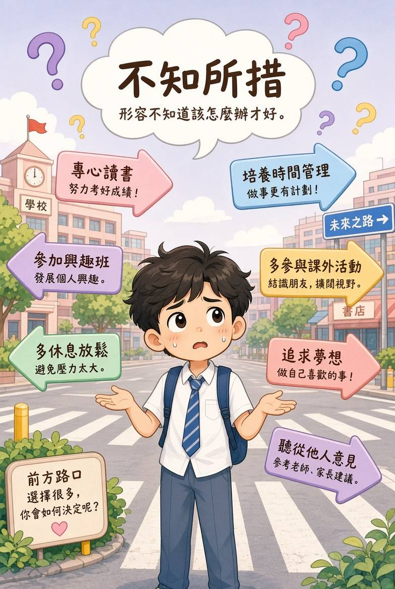
插圖已完成
解釋措：安置、處理。形容人惶恐不安，不知道怎麼辦才好。
字詞拆解措：安置、處理
例句遇上交通意外，小潔嚇得不知所措。
近義手足無措：形容心慌意亂，沒有主意，不知如何是好。
反義從容不迫：形容沉着鎮定，不慌張。
插圖畫面交通意外現場，小女孩抱着書包站在倒下的單車旁，雙手攤開，頭上轉着一圈問號。
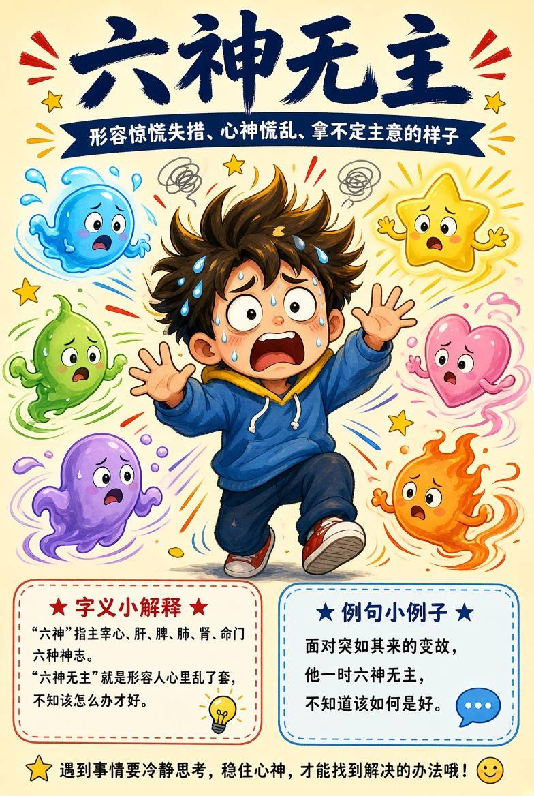
插圖已完成
解釋六神：心、肺、肝、腎、脾、膽六種重要器官之神。形容因心慌意亂而拿不定主意。
字詞拆解六神：心、肺、肝、腎、脾、膽六種器官之神｜主：主意、主張
例句這突然發生的事故使我六神無主，你就不要再給我添煩惱了。
近義不知所措：形容人惶恐不安，不知道怎麼辦才好。
反義泰然自若：形容遇到緊急或危難的情況時，仍能從容鎮定。
插圖畫面六個圓滾滾的小器官精靈在主人頭頂驚慌亂跑，主人雙手抱頭，眼睛轉成圈圈。
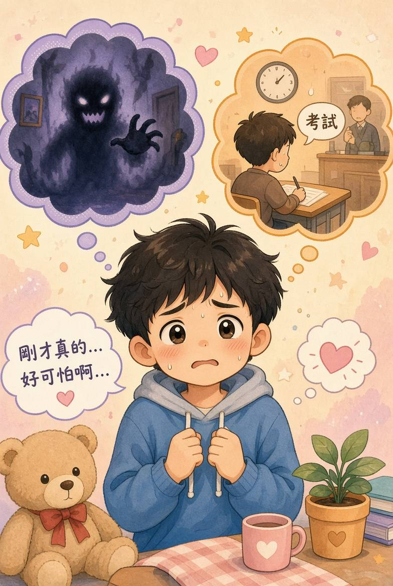
插圖已完成
解釋悸：因害怕而心跳加速。形容危險不安的事情雖然過去，但回想起來心裏仍感到緊張、害怕。
字詞拆解悸：因害怕而心跳加速｜餘：剩下、殘留
例句自從那次交通意外後，每次經過公路上那個彎角，我還是心有餘悸。
近義補充驚魂不定：受驚之後心神還沒有安定下來。
反義補充神色不驚：神情一點也沒有被嚇到，十分鎮定。
插圖畫面男孩再次走過那個馬路彎角，回頭望向地上的煞車痕，胸口一顆紅心還在怦怦跳。
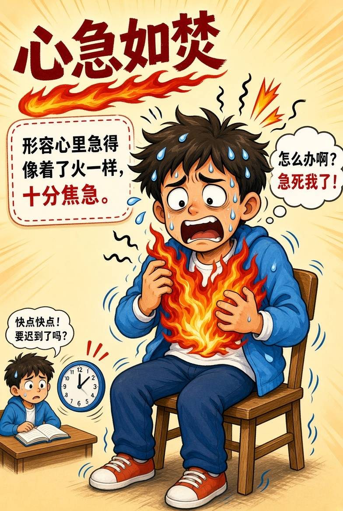
插圖已完成
解釋焚：火燒。形容心中十分着急。
字詞拆解焚：火燒｜如：好像
例句聽到爸爸受傷入院的消息，他心急如焚地趕往醫院。
近義補充急不可耐：急得再也等不住，一刻也坐不下來。
反義氣定神閒：形容神情悠閒，心意安定。
插圖畫面男孩朝醫院大門狂奔，胸口畫着一團小火苗，腳邊揚起一陣風和幾片落葉。
插圖已完成
解釋心境曠達，精神愉快。
字詞拆解曠：開闊、豁達｜怡：愉快、舒暢
例句姐姐放下工作到郊外遊玩，欣賞青山綠水，頓覺心曠神怡。
近義賞心悅目：看到美麗的景色而心情愉快。
反義心煩意亂：心情煩躁，思緒凌亂。
典故補充范仲淹寫《岳陽樓記》時，描寫春天登上岳陽樓、望着洞庭湖：風和日麗、波光閃閃，一時間寵辱都忘了，端起酒杯迎着風，整個人開心到不行。就像考完試跑到海邊大口吸一口氣，煩惱被風吹光光——「心曠神怡」就是這種爽感。
插圖畫面女孩站在湖邊樓閣上遠望青山綠水，張開雙臂深呼吸，白雲和小鳥繞着她打轉。
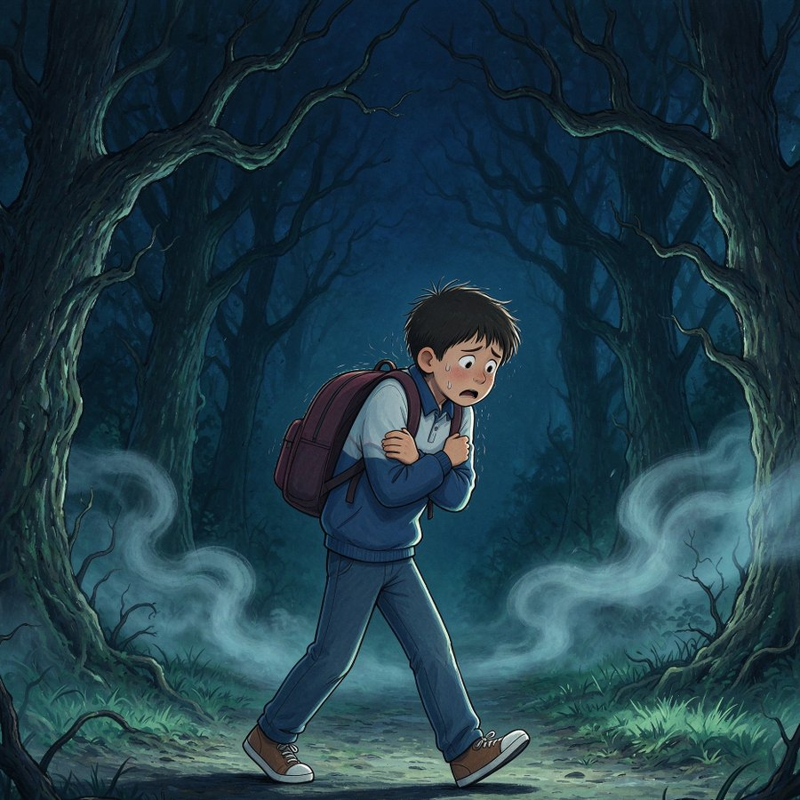
插圖已完成
解釋悚然：恐懼之意。形容十分恐懼害怕。
字詞拆解悚：恐懼、害怕｜然：……的樣子
例句姊姊每次看驚慄電影，總會感到毛骨悚然。
近義不寒而慄：慄：發抖。不冷仍直發抖。形容十分害怕。
反義面不改色：形容在緊急情況下態度鎮定，毫不慌亂，像平常一樣。
插圖畫面電影院裏女孩抱着爆谷桶發抖，手臂汗毛一根根豎起，銀幕上伸出一隻黑影手。
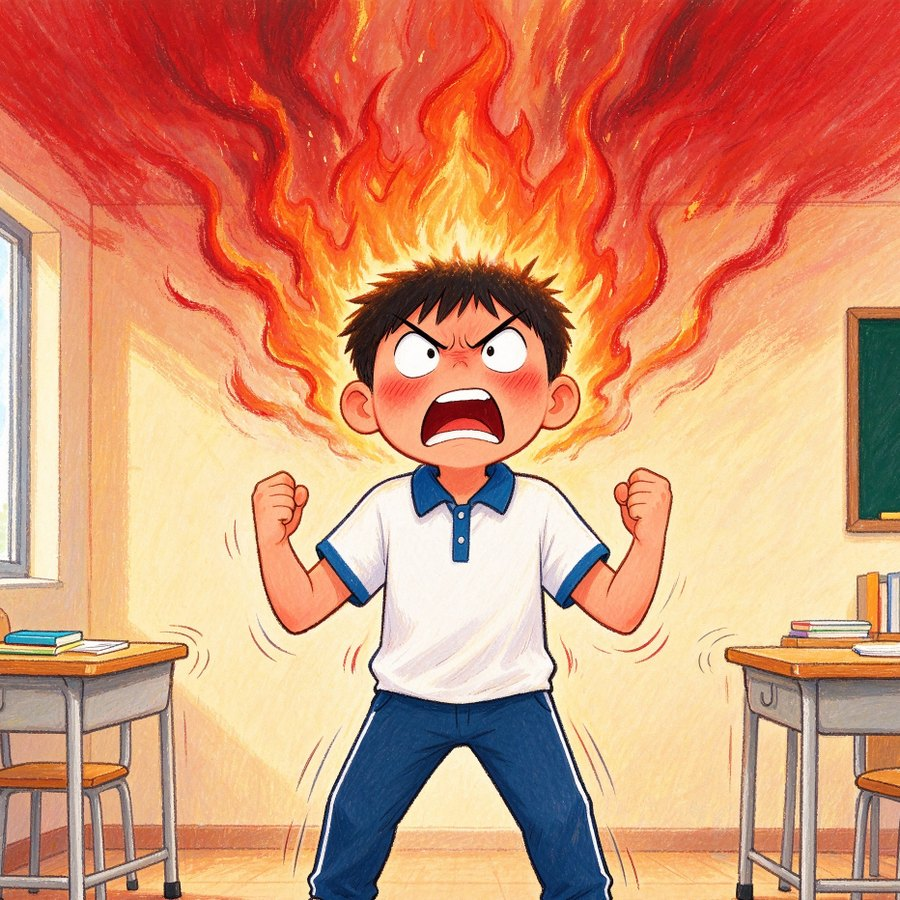
插圖已完成
解釋怒火上升到三丈高。形容人十分生氣。
字詞拆解冒：往上衝、升起｜三丈：形容很高，不是實數
例句妹妹不慎撕破了哥哥的作業簿，令哥哥火冒三丈。
近義怒氣沖天：非常忿怒的樣子。
反義心平氣和：心情平靜，態度溫和。指不急躁，不生氣。
插圖畫面哥哥頭頂竄起三丈高的大火焰，手裏抓着被撕破的作業簿，滿臉通紅。
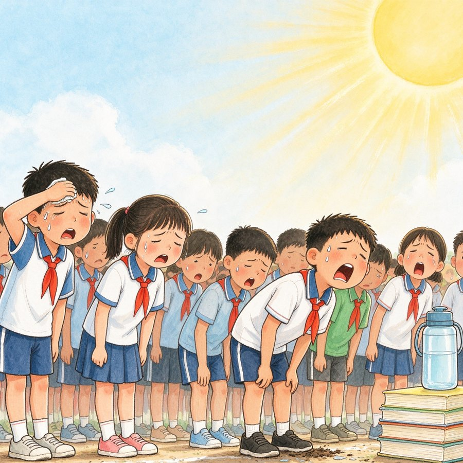
插圖已完成
解釋不斷地叫苦，表示痛苦到了極點。
字詞拆解連天：接連不斷，形容程度極深｜苦：痛苦、辛苦
例句姊姊三個月來都要加班工作，令她叫苦連天。
近義叫苦不迭：形容連聲叫苦。
反義眉開眼笑：眉頭舒展，眼含笑意。形容高興愉快的樣子。
插圖畫面加班的姊姊被一疊疊文件山壓着，雙手舉高，嘴邊冒出一長串灰色小雲朵。
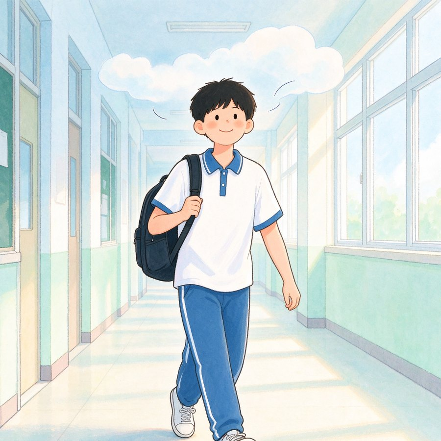
插圖已完成
解釋好像放下了沉重的負擔那樣輕鬆愉快。
字詞拆解如：好像｜釋：放下｜重負：沉重的負擔
例句我向爸爸承認自己的錯誤後，心中如釋重負。
近義補充了無牽掛：心裏再沒有牽掛，整個人放鬆下來。
反義千鈞重負：好像背負着千斤的重擔一樣。
典故補充春秋時魯昭公整天玩樂、不理國事，百姓被他折騰得叫苦連天。後來他被趕出國，《穀梁傳》只寫了一句：「昭公出奔，民如釋重負」——老百姓居然像卸下大石頭一樣鬆一口氣。就像期考最後一科交卷那一刻，書包瞬間變輕，就是這個感覺。
插圖畫面男孩把背上的大石頭「咚」一聲放到地上，整個人輕得飄起來，頭上是一片藍天白雲。
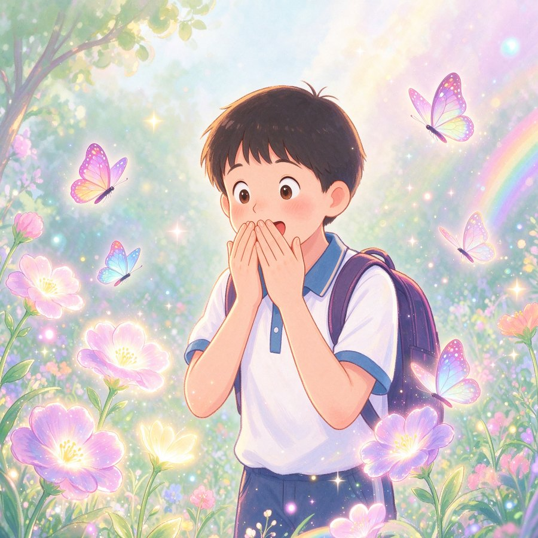
插圖已完成
解釋言：說。美妙到了無法用言語來形容的地步，常用於表示誇獎。
字詞拆解妙：美妙｜言：說、用言語形容
例句《天鵝湖》中那個女主角的舞姿輕盈優美，簡直妙不可言。
近義補充歎為觀止：讚歎眼前的事物好到極點。
反義一無可取：沒有一點可取的地方。
插圖畫面芭蕾舞者單腳旋轉，裙擺化成一道彩色光帶，台下觀眾張大嘴巴、一個字也說不出來。
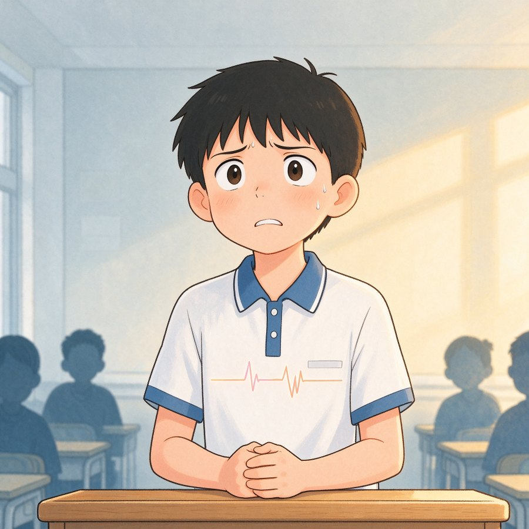
插圖已完成
解釋形容心緒起伏不定的樣子。
字詞拆解忐忑：心神不定、七上八下｜安：安定
例句妹妹不慎把爸爸的藏書弄污了，她正忐忑不安地等待爸爸回家，向他認錯。
近義坐立不安｜惴惴不安：形容焦急、煩躁、心神不寧的樣子。
反義悠然自得：形容神態從容、心情舒暢。
插圖畫面小女孩抱着弄污的藏書站在大門口等爸爸回家，一顆心在胸口一上一下彈跳。
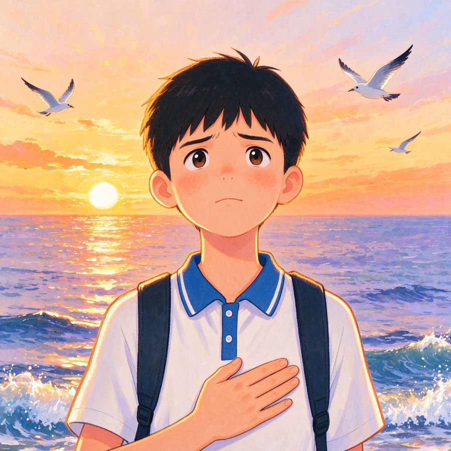
插圖已完成
解釋形容感受深刻，難以忘懷。
字詞拆解刻：雕刻｜銘：在器物上刻字，引申為牢記
例句這個教訓實在刻骨銘心，我再不會犯上同樣的錯誤。
近義沒齒難忘：一世都忘記不了。多用於對別人的幫助，表示感激。
反義置之腦後：放在一邊，不再想起。
插圖畫面一顆發光的紅心上有一道深深的刻痕，男孩按着心口認真點頭，旁邊飄着小星星。
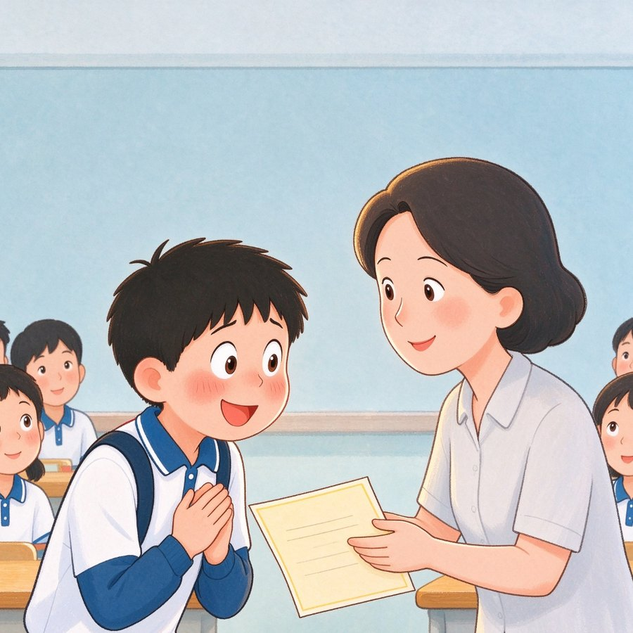
插圖已完成
解釋受到過分的寵愛或賞識而感到驚喜或不安。
字詞拆解寵：寵愛、賞識｜若：好像｜驚：驚喜、不安
例句收到校長送給我的小禮物後，我感到受寵若驚，心情久久未能平伏。
近義補充大喜過望：結果遠比預期好，高興得不得了。
反義寵辱不驚：不管受寵或受辱，都不動心。形容不把個人的榮辱得失放在心上。
典故補充老子在《道德經》裏早就說過「寵辱若驚」：忽然被大人誇兩句，心裏又爽又慌，跟被老師當眾點名表揚時一模一樣——想開心，又怕太招搖。宋朝蘇軾還把這種感覺寫成「被寵若驚」，後來就變成「受寵若驚」啦。
插圖畫面校長親手把小禮物交到學生手上，學生雙手接過、眼睛瞪得圓圓、臉頰泛紅，頭上冒出小驚嘆號。
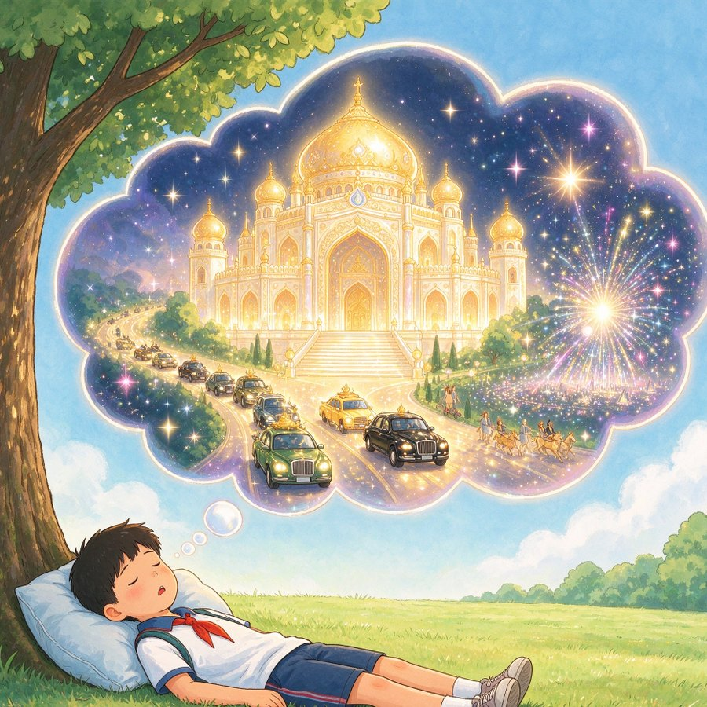
插圖已完成
解釋柯：樹枝。南柯：指夢境，也比喻虛幻。比喻空歡喜一場，也形容做了一場大夢。
字詞拆解柯：樹枝｜南柯：借指夢境、虛幻之事
例句即使他登上事業的高峯，但沒人可保證這一切不會只是南柯一夢。
近義黃粱一夢：一鍋黃米飯還沒有煮熟，一場好夢已被驚醒。比喻虛幻的夢想，多指空想。
反義補充如願以償：願望真的實現了，不是一場空夢。
典故唐朝有個淳于棼，在大槐樹下睡着，夢裏直接人生勝利組：娶了公主、當上南柯郡太守、榮華富貴全包。結果一睜眼——甚麼都沒有，所謂「槐安國」只是樹下一個螞蟻洞，整場富貴還不到一頓飯時間。就像打機一路升到滿級，醒來發現是午睡按到做夢模式，白高興一場。
插圖畫面書生躺在大槐樹下睡着，樹下小蟻洞冒出一個大泡泡，泡泡裏是金色宮殿，邊緣快要破掉。
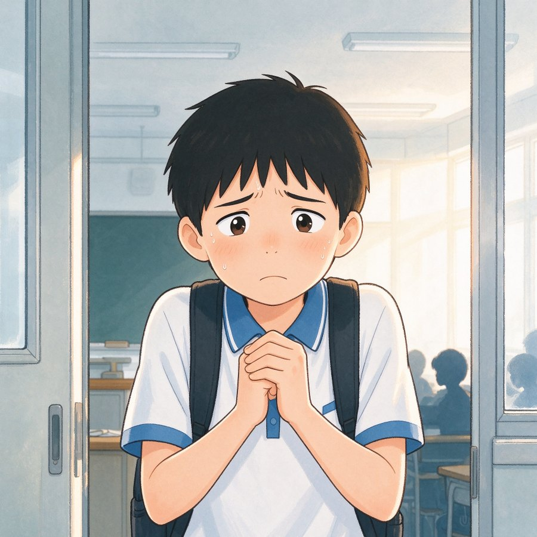
插圖已完成
解釋望外：意想不到。因意想不到的好事而感到欣喜。
字詞拆解望：期望、預料｜望外：意料之外
例句今天可以找回失蹤三年的小狗，我們一家人都喜出望外。
近義大喜過望：因結果超過原本預期而感到特別高興。
反義大失所望：非常失望。
插圖畫面走失三年的小狗撲回一家人懷裏，全家張大嘴巴、眼眶發亮，彩色愛心四散飛起。
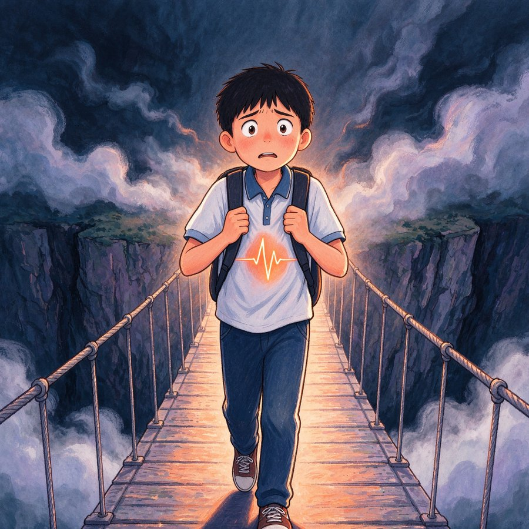
插圖已完成
解釋惴惴：恐懼、擔憂的樣子。形容因恐懼擔憂而心神不定。
字詞拆解惴惴：恐懼、擔憂的樣子｜安：安定
例句小傑不知道校長要見他的原因，正懷着惴惴不安的心情走進校長室。
近義憂心忡忡｜惶恐不安：擔憂害怕，心神不定。
反義補充安之若素：遇上不尋常的事，仍像平常一樣安心自在。
插圖畫面小傑捧着一張空白通知紙走向校長室，手心冒汗，門把旁畫着一圈顫抖的小波浪線。
 插圖已完成
插圖已完成
解釋形容十分擔心、害怕，無法平靜下來。
字詞拆解提：向上懸起｜吊：懸掛，比喻放心不下
例句這座橋樑日久失修，來往的行人都提心吊膽。
近義心驚膽戰：形容十分害怕。
反義心安理得：認為自己所做的事合情合理而內心坦然。
插圖畫面行人走在搖搖晃晃的舊吊橋上，一顆顆紅心被細線吊在半空，橋下浪花翻滾。
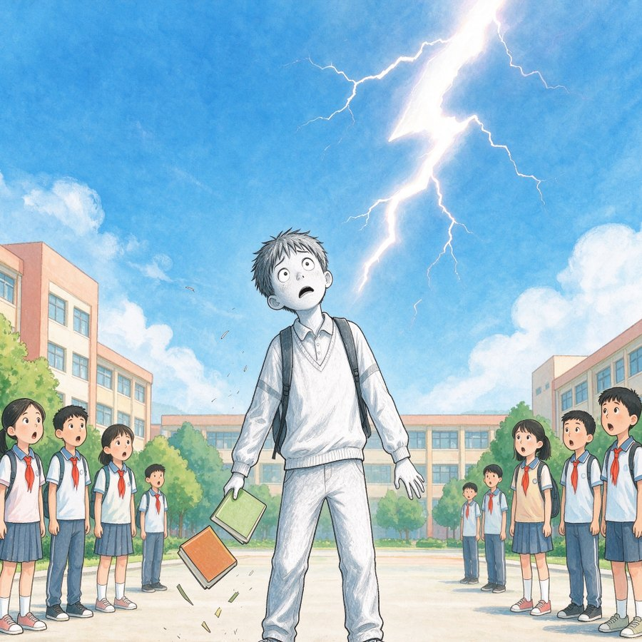
插圖已完成
解釋在晴天打起響雷。比喻突然發生意料之外、令人震驚的事件。
字詞拆解霹靂：又急又響的雷｜晴天：比喻本來平靜無事
例句麗明知道被好朋友出賣，頓時晴天霹靂，說不出半句話來。
近義平地風波：比喻突然發生意料不到的糾紛或事故。
反義喜從天降：比喻突然遇到意想不到的喜事。
插圖畫面萬里無雲的藍天上突然劈下一道巨大閃電，女孩愣在原地，手裏的書掉在地上。
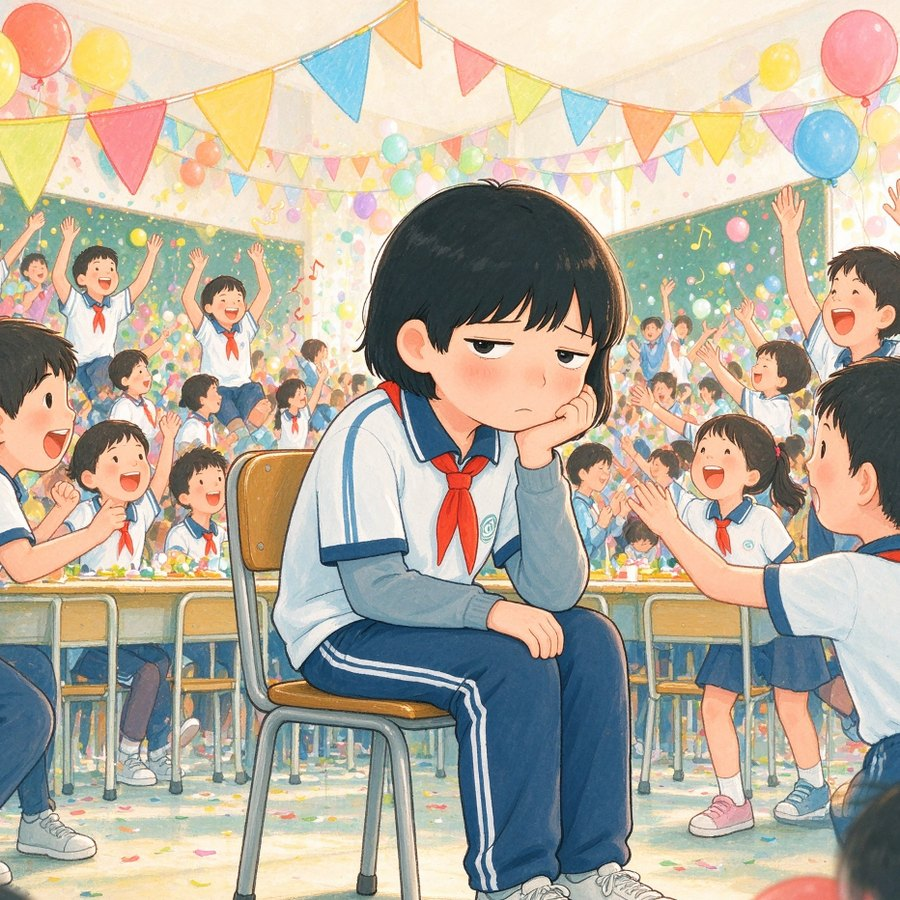
插圖已完成
解釋闌珊：衰落。形容興致極為低落，無甚興趣，意志消沉。
字詞拆解闌珊：衰落、將盡｜意興：興致
例句志文長期沒有登上籃球比賽的正選名單，感到意興闌珊，打算在這場比賽後退出球隊。
近義心灰意冷：形容意志消沉，態度消極，不思振作。
反義興致勃勃：形容興趣濃厚，情緒高漲。
插圖畫面籃球員坐在空蕩球場邊的長凳上，手裏的籃球洩了氣，頭上浮着一朵小灰雲。
※ 學校相片於本頁頁底截斷，近義、反義與典故由整理者補充；本條為教材清單最後一個成語。
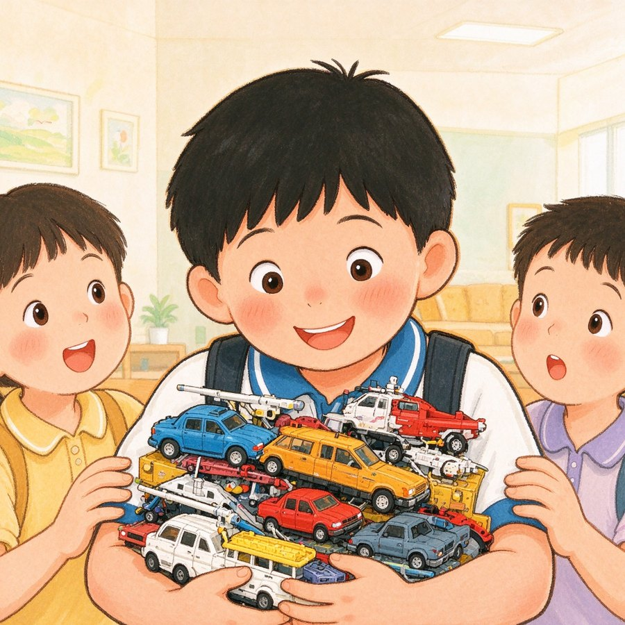
插圖已完成
解釋釋：放開，放下。對鍾愛的事物捨不得放手。
字詞拆解愛：喜愛、鍾愛｜釋：放下、放開
例句妹妹對這本故事書愛不釋手，甚至連睡覺時也要把它放在枕邊。
近義補充手不釋卷：拿着書本捨不得放下，形容非常喜愛閱讀。
反義補充不屑一顧：連看一眼都懶得看，完全提不起興趣。
典故補充南朝的昭明太子蕭統超愛陶淵明的文章，編《陶淵明集》時寫下「余愛嗜其文，不能釋手」——意思就是：太喜歡了，手根本捨不得放開。跟今天追劇追到捨不得按暫停、手機滑到半夜簡直同一款。
插圖畫面小女孩抱着故事書睡着了，書還緊緊摟在懷裏、貼着枕邊，床頭小燈亮着暖暖的光。
找不到符合的成語，請換個字再試。